Novelty Overview
Paper aims to generate 2048 x 1024 realistic looking images given semantic label maps and also develops novel method to allow controllable output generation from GANs. Given the inference time of the network is ~30ms on a GTX 1080ti GPU, allows for a realtime interactive editing framework for users to change the scene as desired.
Challenges
- Training GANs at higher resolutions was found to be unstable by previous methods
- GAN output results were not realistic enough
- No intuitive control over outputs generated by GANs
Method
- Multi-scale Generator - To stabilize training, builds from coarse (1024x512) to fine (2048x1024) resolution
- Multi-scale Discriminator - To ensure scene consistency at all levels (op/4, op/2, op) improves visual result
- Improved Adversarial Loss - For stable training and better visual results
- Object Instance Maps - For better boundary separation between object instances
- Feature Encoder Network - To learn representation of an object instance as a feature vector, to allow interactive editing
Multi-scale Generator
- First trains an Autoencoder style network G1, at smaller resolution (1024x512)
- Then appends G2, to generate at higher resolution (2048x1024), this approach leads to stable training
- G2 takes coarse output from G1 and refines it to produce final result
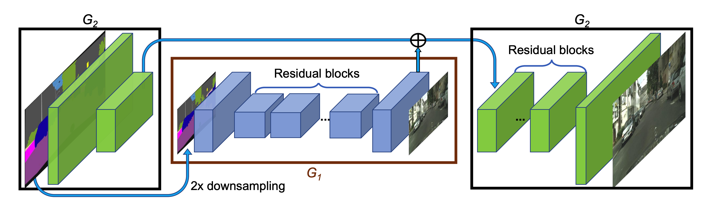
The Generator Network, G1, G2
Multi-scale Discriminator
- Generator Network, outputs a raw frame and also a mask
- The final frame is contructed as 'sticking' generated person from raw frame to background using the mask
Discriminator
- Role is to distinguish the actual images from the ones generated by the generator
- Outputs class probability of the o/p from generator belonging to the GT distribution
- Evaluated at multiple resolutions to improve results
- Apart from the discriminator loss, additional feature matching component(activation o/p's from VGG) to ensure closeness of generated frame to GT frame
- 't' is a binary mask to filter person from frame
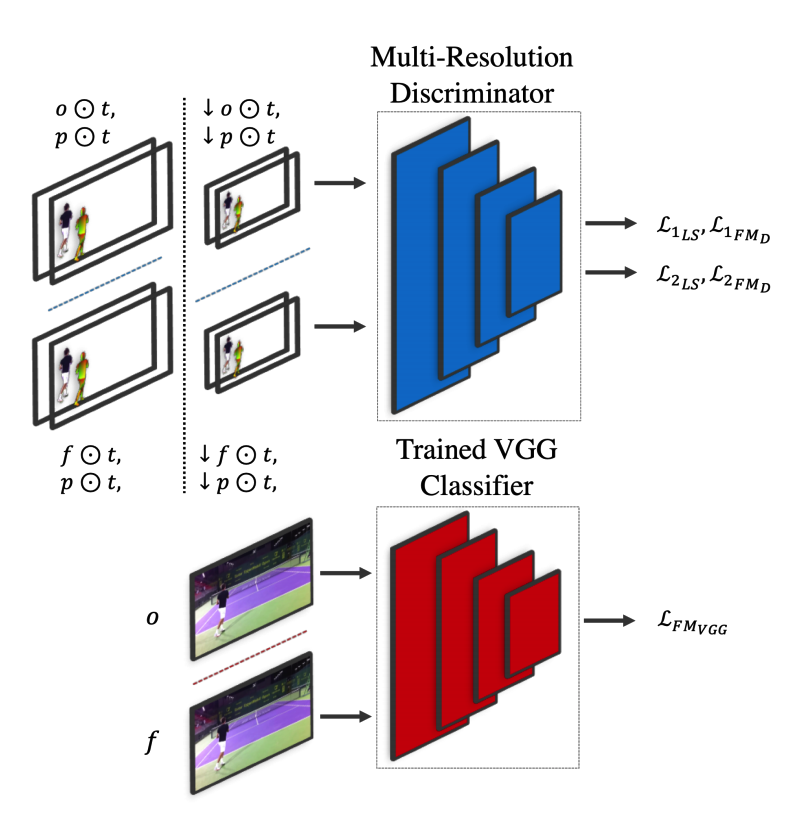
Multi resolution Discriminator used to train the Generator networks, 'perception loss' component from the VGG network
Loss Functions
- Discriminator: Discriminate output from P2P vs GT, force discriminator output to 0 for P2P, 1 for GT
- Generator: Fool discriminator, claim outputs belong to GT disctribution
- Generator tries to minimize difference in discriminator network activations of its output vs GT
- Additional Feature Matching loss(VGG) has been added to generator to make outputs realistic, learn shadows, reflections
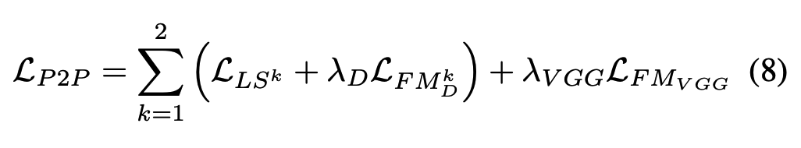
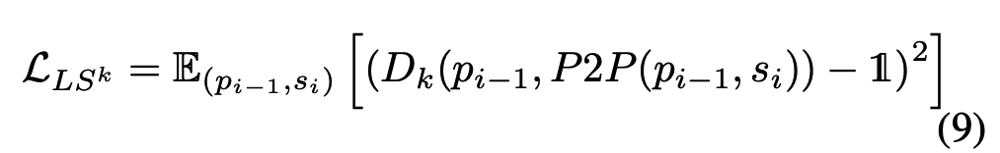
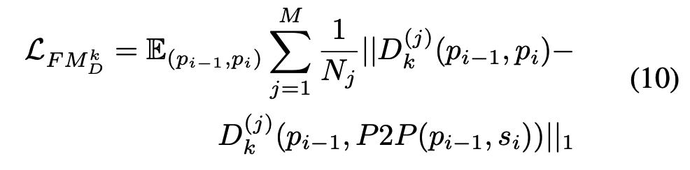
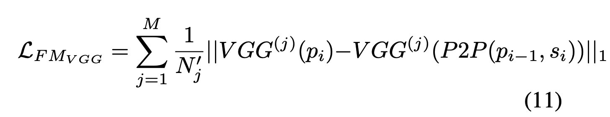
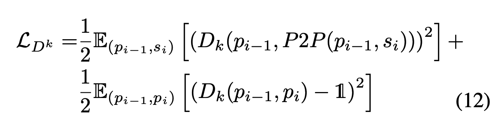
P2P, Discriminator Loss
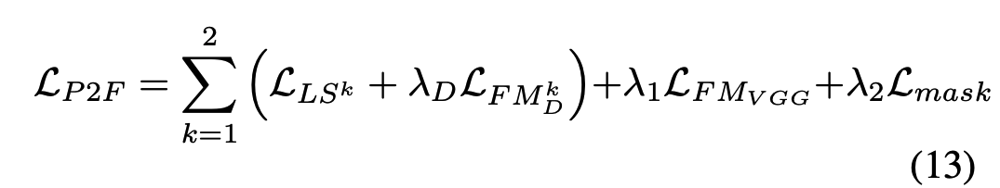
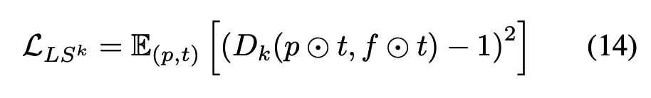
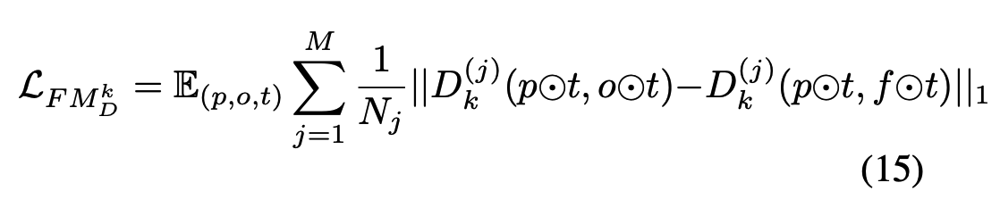
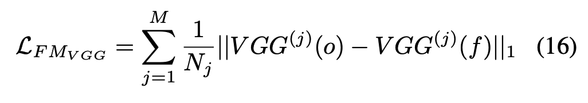
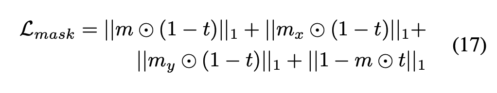
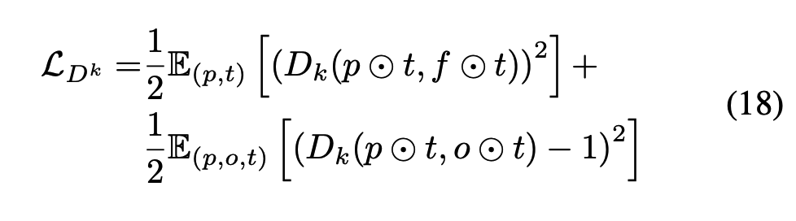
P2F, Discriminator Loss
Training
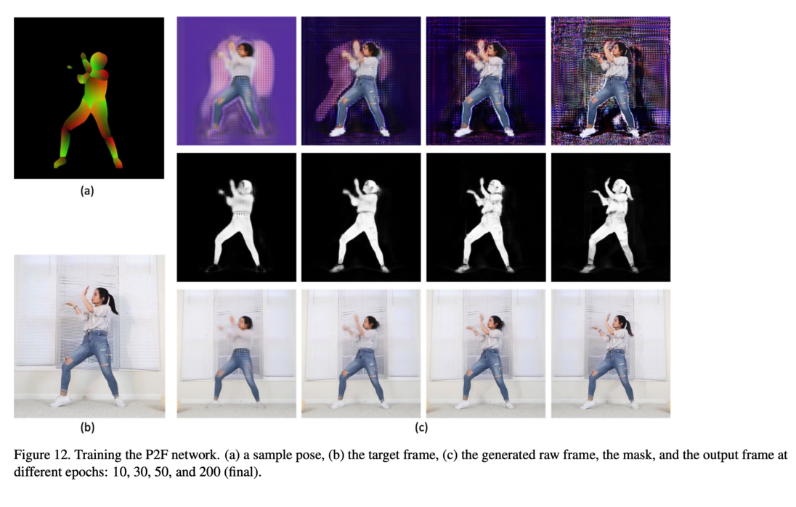
Blending Results
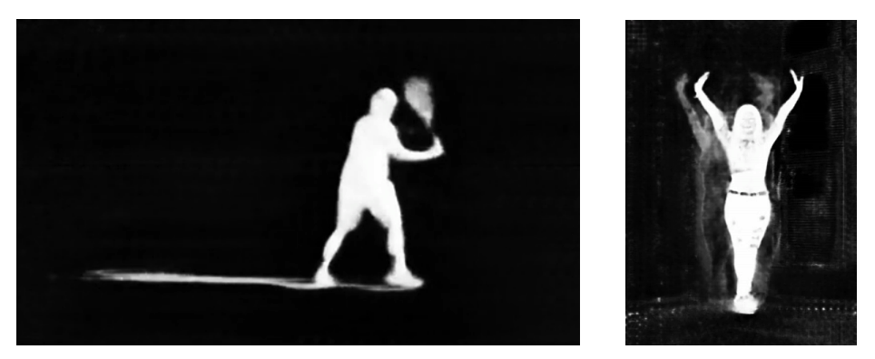
Mask contains information about shadows, reflections, helps blend into different backgrounds
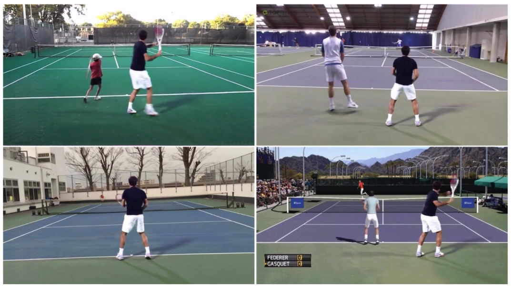
Project Demo